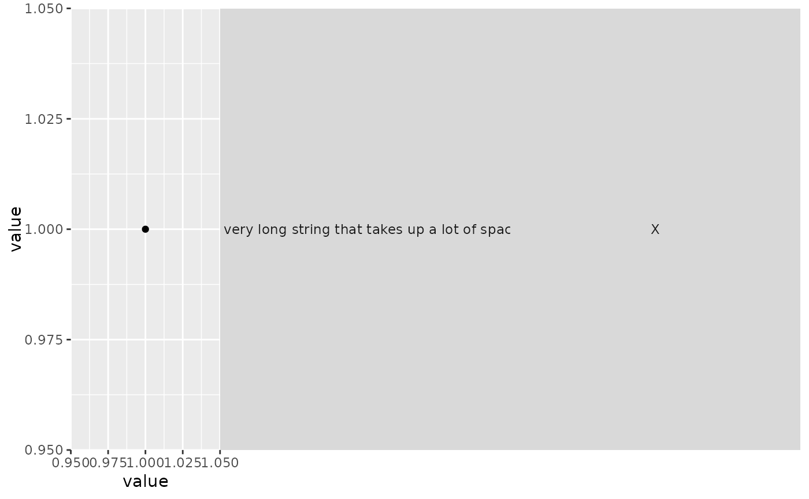
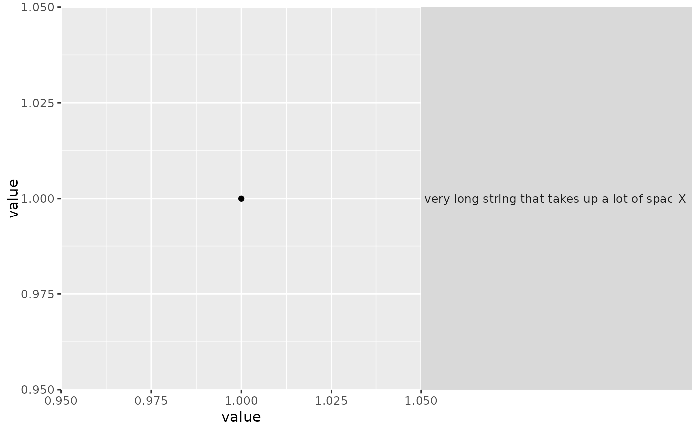

Strips with the style of vanilla ggplot2.
Arguments
- clip
A
character(1)that controls whether text labels are clipped to the background boxes. Can be either"inherit"(default),"on"or"off".- size
A
character(1)stating that the strip margins in different layers remain"constant"or are"variable".
See also
Other strips:
strip_nested(),
strip_split(),
strip_themed()
Examples
# Some dummy data with a long string
df <- data.frame(
short = "X",
long = "A very long string that takes up a lot of space",
value = 1
)
# Simple plot
p <- ggplot(df, aes(value, value)) +
geom_point() +
theme(strip.text.y.right = element_text(angle = 0))
# Short titles take up as much space as long titles
p + facet_grid2(
vars(short, long),
strip = strip_vanilla(size = "constant")
)

# Short titles take up less space
p + facet_grid2(
vars(short, long),
strip = strip_vanilla(size = "variable")
)
